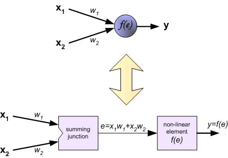

Erlang and Neural Networks
From Erlang Community
by Wilhelm
This is a concatenated version of a series of blog posts on my blog, which is why it's rather long. Therefore, I've done some editing to make sure it flowed nicely as one piece.
I assume that most of my audience are programmers that didn't much like math. If they did, they probably wouldn't be reading this, and would have read it themselves from a textbook. Therefore, I will go into explaining some implications of the math, but I don't actually do any proofs. If you liked math, feel free to make any corrections or notify me through the wiki's messaging system for errors.
I wrote this as I was learning Erlang. I hope this article will be informative.
Contents[hide] |
[edit] How Erlang and neural networks fit together
It started with an article about how the free lunch is over for software engineers that a friend sent to me about two years ago. It basically stated that developers have been riding on the wave of Moore's law to save their butts, and it's not going to last forever. In addition, it's been known for a while that chip manufacturers are moving towards multi-core processors to increase performance. If developers are going to take advantage of hardware like they have been, they're going to have to learn how to program concurrent programs.
The problem is, programmers suck at it. It's well known that concurrent programming, as it stands, is not easy for humans. Even Tim Sweeney, the guy that architected the Unreal Engine (no mere programming mortal), thought it was hard. It was when I started looking beyond threads as a concurrency abstraction that I tripped over a programming language developed specifically for concurrency.
[edit] Yet Another Programming Language
I had always thought that I should learn more about functional programming. It seemed like an odd beast to me, especially since you don't change state through side-effects. "How do you get anything done?" It's kinda like when you first learned that you don't need GOTO, and subsequently, when you learned that FOR loops suck.
And yet, I never really found a need or a small project I could do with functional programming that might prove to be satisfying. It was only due to the search for better concurrency abstractions that I ran across Erlang, a functional programming language that is used explicitly because it's good at concurrency. In fact, it's pretty much the only one out there that touts concurrency as its strength.
It uses the actor model, where processes share no data and just pass messages around. Because there's nothing shared, there's no issue of synchronization or deadlocks. While not as sexy-sounding as futures or software transactional memory, the actor model falls nicely along the lines of complex and emergent systems--systems that have locally interacting parts with a global emergent behavior. Could one of these systems be good for a small side project to do in Erlang?
[edit] A quick detour in neural networks
Artificial neural networks seemed to be the perfect thing actually. A quick, quick diversion into what they are.

A feed-forward artificial neural network is basically a network of perceptrons that can be trained to classify (recognize) patterns. You give the network a pattern as an input, it can tell you the classification of that input as an output.
You can think of a perceptron much like a neuron in your brain, where it has lots of inputs and one output. It's connected to other perceptrons through these inputs and outputs and there are weights attached to the input connections. If there is a pattern of input, and it passes a threshold, the perceptron 'fires' (i.e. outputs a value). This in turn might activate other perceptrons.
Even simpler, a perceptron is modeled as a function that takes a vector x as an input and outputs a number y. All it does is take the dot product (ie. weighted sum) of the input vector x with weights vector w, and pass it through a non-linear and continuous thresholding function, usually a sigmoid function. When you connect them up in layers, you get an artificial neural network that can learn to classify patterns if you train it with examples.
It has to learn patterns by adjusting the weights between perceptrons in the network after each training example, and you tell it how wrong it was in recognizing the pattern. It does this by an algorithm called back propagation. It's the same page I lifted all these pictures from. I put all their pictures in an animated gif to illustrate:
In the first part, the example propagates forward to an output. Then it propagates back the error. Lastly, it propagates forward the adjusted weights from the calculated error. This is not the only type of neural network that exists, but we're going to be building this type.
[edit] A good fit for Erlang
Why would this be a good fit as a subject to play with Erlang? Well, if you'll notice, each perceptron only takes input from its neighboring perceptrons, and only outputs to its neighbors. This is very much in line with the actor model of concurrency. Each process would be a perceptron, and would act as an autonomous agent that only interacts with other processes it comes into contact with--in this case, only other perceptrons it's connected to.
In addition, you'll also notice that in the animation, the perceptron values are calculated neuron by neuron. In a concurrent system, there's no reason to do this! You can actually do the calculation layer by layer, since the calculations of any individual perceptron only comes from the outputs of the perceptrons in the layers before it. Therefore, all outputs for perceptrons in a layer can be calculated in parallel.
Notice, however, that layers need to be calculated serially. I had originally thought that with the learning process propagating back and forth, maybe it could be pipelined. On closer examination, however, the best one can do is to feed-forward the next input one layer behind the adjusting of weights, to make the learning process go faster.
[edit] State of the Purely Functional
Erlang is a purely functional programming language. Functional style programming is nothing new--it's just been lurking in the more academic corners of computer science. In the transition from imperative/procedural/OO programming to functional programming, there are new concepts to grok. You'll hear this from people just learning functional programming for the first time (myself included). The hardest thing for me to get over in a pure functional language is the absence of state. My first reaction was, "Well, how do you get anything done?"
Not having state has its advantages, and you'll hear stuff about side-effects and referential transparency. But I'd like to think of it as, things that don't have state can't be broken--they just exist. However, state is useful in computation, and different languages have different ways of getting around it. With Haskell, you use monads. At first, I figured it was the same with Erlang. But in this short tutorial on Erlang, it simply states that Erlang uses Erlang processes to keep state.
This maps pretty well with what we're trying to do. Each perceptron has state: its weights. In an object-orientated language, you may keep the weights as attributes in an object. In Erlang, each perceptron will be an Erlang process. It will "keep its state" by calling itself recursively and passing itself back the necessary state information. Any communication between perceptrons will be by send messages back and forth as they fire and stimulate each other.
[edit] Building a perceptron
Enough intro on Erlang and Neural Networks. Let's get to building a perceptron.
[edit] The essence of a perceptron


So once again, this is a perceptron. It's a weighted sum (a dot product) of the inputs, which is then thresholded by f(e). So we'll write a thresholding function and a weighted sum in Erlang.
We start by declaring the name of the module, and the functions to export from the module.
-module(ann). -export([perceptron/3, sigmoid/1, dot_prod/2, feed_forward/2, replace_input/2, convert_to_list/1]). |
I exported most of the functions, so I can run them from the command line. I'll remove them later on.
First we write our thresholding function. We will use the sigmoid function as our thresholding function. It's pretty easy to explain. A value, X goes in, another value comes out. It's a math function.
sigmoid(X) -> 1 / (1 + math:exp(-X)). |
Since I wasn't as familiar with all the libraries in Erlang, and I wrote a dot product function, and it wasn't too bad. Erlang, for the most part, doesn't use loops. The common way is to use library functions for list processing, list comprehensions, or recursion. I just decided to try my hand at writing a recursive function. It's been a while. The first part is the base case, and the second part is what you'd do if the "recursion fairy" took care of the rest.
dot_prod([], []) -> 0; dot_prod([X_head | X_tail], [Y_head | Y_tail]) -> X_head * Y_head + dot_prod(X_tail, Y_tail). |
Simple, so far, right? So to calculate the feed forward output of a perceptron, we'll do this:
feed_forward(Weights, Inputs) -> sigmoid(dot_prod(Weights, Inputs)). |
[edit] The body of a nerve
So far, so good. But we still need to create the actual perceptron! This is where the processes and state-keeping comes up.
perceptron(Weights, Inputs, Output_PIDs) ->
receive
{stimulate, Input} ->
% add Input to Inputs to get New_Inputs...
% calculate output of perceptron...
% stimulate the perceptron my output is connected to
perceptron(Weight, New_inputs, Output_PIDs)
end. |
This is an Erlang process, and it receives messages from other Erlang processes. Currently, it only accepts one message, stimulate(Input) from other Erlang processes. This is a message that other perceptrons will use to send its output to this perceptron's inputs. If a perceptron is stimulated, we should update our list of inputs, then calculate the new output of the perceptron, and then stimulate the perceptron my output is connected to.
Notice that at the end of the message, we call the processes again, with New_Inputs. That's how we will maintain and change state.
Note this won't result in a stack overflow, because Erlang knows it doesn't have to keep the stack around. This is because no state is ever kept between messages calls and everything you need to know is passed into the function perceptron, so we can throw away the previous instances of the call to perceptron.
We do come to a snag though. How do we know which other perceptron the incoming input is from? We need to know this because we need to be able to weigh it correctly. My solution is that Input is actually a tuple, consisting of {Process_ID_of_sender, Input_value}. And then I keep a list of these tuples, like a hash of PID to input values, and convert them to a list of input values when I need to calculate the output. Therefore, we end up with:
perceptron(Weights, Inputs, Output_PIDs) ->
receive
{stimulate, Input} ->
% add Input to Inputs to get New_Inputs...
New_inputs = replace_input(Inputs, Input),
% calculate output of perceptron...
Output = feed_forward(Weights, convert_to_list(New_inputs)),
perceptron(Weights, New_inputs, Output_PIDs)
end.
replace_input(Inputs, Input) ->
{Input_PID, _} = Input,
lists:keyreplace(Input_PID, 1, Inputs, Input).
convert_to_list(Inputs) ->
lists:map(fun(Tup) ->
{_, Val} = Tup,
Val
end,
Inputs). |
If you're not familiar with the map function, check out Joel's explanation on it. The map function you see in convert_to_list() is the same as the map function in ruby that would go:
def convert_to_list(inputs)
inputs.map { |tup| tup.last }
end |
Now, there's one last thing that needs to be done. Once we calculate an output, we need to fire that off to other perceptrons that accept this perceptron's output as its input. And if it's not connected to another perceptron, then it should just output its value. So then we end up with:
perceptron(Weights, Inputs, Output_PIDs) ->
receive
{stimulate, Input} ->
% add Input to Inputs to get New_Inputs...
New_inputs = replace_input(Inputs, Input),
% calculate output of perceptron...
Output = feed_forward(Weights, convert_to_list(New_inputs)),
% stimulate the perceptron my output is connected to
if Output_PIDs =/= [] ->
lists:foreach(fun(Output_PID) ->
Output_PID ! {stimulate, {self(), Output}}
end,
Output_PIDs);
Output_PIDs =:= [] ->
io:format("~n~w outputs: ~w", [self(), Output])
end,
perceptron(Weights, New_inputs, Output_PIDs)
end. |
We know which perceptrons to output to, because we keep a list of perceptron PIDs that registered with us. So if the list of Output_PIDs is not empty, then for each PID, send them a message with a tuple that contains this perceptron's PID as well as the calculated Output value. Let's try it out in a test drive
[edit] Test Drive
1> c(ann).
{ok,ann}
2> Pid = spawn(ann, perceptron, [[0.5, 0.2], [{1,0.6}, {2,0.9}], []]).
<0.39.0>
3> Pid ! {stimulate, {1,0.3}}.
<0.39.0> outputs: 0.581759
{stimulate,{1,0.300000}}
4>
|
So you can see, we got an output of 0.581759. We can verify this by doing this on our TI-85 calculator:
x = 0.5 * 0.3 + 0.2 * 0.9 Done 1 / (1 + e^-x) .581759376842 |
And so we know our perceptron is working feeding forward! Next, we have to figure out how to connect them up to each other.
[edit] Interconnecting Perceptrons
We see that neural network is basically made up of interconnected perceptrons (or neurons), and they are basically modeled as a linear combination of inputs and weights with a non-linear function that modifies the output.
[edit] Drawing a line in the sand
Classifiers often do very well strictly on probabilities, such as Bayesian Spam Filters. But often times, we don't know what the underlying probabilities are for the data, and not only that, we don't have lots of training data to build accurate probability densities. One way around that is to draw a line in the data space that acts as the decision boundary between two (or more) classes. That way, you only have to find the parameters (i.e. weights) of the line, which is often fewer in number than the entire probability space.
This is exactly what a perceptron does. It creates a decision boundary in data space. If the data space is a plane (2D, or having two inputs), then it draws a line. In 3D, it draws a plane. For higher data space dimensions (4D or more), it draws a hyperplane.
[edit] Why not just one?
The problem with just using a perceptron is that it can only classify data that is linearly separable--meaning data you can separate with a line. The XOR problem is a simple illustration of how you can't draw a line that separates between on and off in an XOR. Minsky and Papert wrote a famous paper that kinda killed off research in this field for about a decade because they pointed this out.
So to get around this linearity, smart people eventually figured out that they can chain perceptrons together in layers, and that gives them the ability to express ANY non-linear function, given an adequate number of hidden layers.
[edit] Shake my hand and link up to form Voltron
Let's try linking our perceptrons together. We're going to add two more messages to our perceptrons:
perceptron(Weights, Inputs, Output_PIDs) ->
receive
% The other messages from previous parts
{connect_to_output, Receiver_PID} ->
Combined_output = [Receiver_PID | Output_PIDs],
io:format("~w output connected to ~w: ~w~n", [self(), Receiver_PID, Combined_output]),
perceptron(Weights, Inputs, Combined_output);
{connect_to_input, Sender_PID} ->
Combined_input = [{Sender_PID, 0.5} | Inputs],
io:format("~w inputs connected to ~w: ~w~n", [self(), Sender_PID, Combined_input]),
perceptron([0.5 | Weights], Combined_input, Output_PIDs)
end.
connect(Sender_PID, Receiver_PID) ->
Sender_PID ! {connect_to_output, Receiver_PID},
Receiver_PID ! {connect_to_input, Sender_PID}.
|
We would never call connect_to_output() or connect_to_input() directory. We'd just use connect(). It basically just adds the perceptron's process ID to each other, so they know who to send messages to when they have an output.
Note that the last message connect_to_input() isn't followed by a semicolon. That means every message before it in perceptron needs to end with one. So if you've been following along, the stimulate() message from part II needs a semicolon at the end of it now.
We can now connect up our perceptrons, but with the way it is, currently, we'd have to send a separate message to each perceptron connected to an input to the network. This is tedious. We are programmers and we are lazy. Let's make a perceptron also double as an source node. As source node simply passes its input to to its outputs.
perceptron(Weights, Inputs, Output_PIDs) ->
receive
% previous messages above and in part II
{pass, Input_value} ->
lists:foreach(fun(Output_PID) ->
io:format("Stimulating ~w with ~w~n", [Output_PID, Input_value]),
Output_PID ! {stimulate, {self(), Input_value}}
end,
Output_PIDs);
end.
|
Now we can start creating perceptrons.
64> N1_pid = spawn(ann, perceptron, [[],[],[]]). <0.325.0> 65> N2_pid = spawn(ann, perceptron, [[],[],[]]). <0.327.0> 66> N3_pid = spawn(ann, perceptron, [[],[],[]]). <0.329.0> |
Note that we get back three process IDs of the three perceptrons we created. Then we start connecting them.
67> ann:connect(N1_pid, N2_pid).
<0.325.0> output connected to <0.327.0>: [<0.327.0>]
<0.327.0> inputs connected to <0.325.0>: [{<0.325.0>,0.500000}]
{connect_to_input,<0.325.0>}
68> ann:connect(N1_pid, N3_pid).
<0.325.0> output connected to <0.329.0>: [<0.329.0>,<0.327.0>]
<0.329.0> inputs connected to <0.325.0>: [{<0.325.0>,0.500000}]
{connect_to_input,<0.325.0>} |
We used N1 as an input node connected to perceptrons 2 and 3. So if N1 is passed a value, N2 and N3 should be stimulated with that value.
69> N1_pid ! {pass, 0.5}.
Stimulating <0.329.0> with 0.500000
{pass,0.500000}Stimulating <0.327.0> with 0.500000
<0.329.0> outputs: 0.562177
<0.327.0> outputs: 0.562177
|
Hurray! So now, the network's got tentacles, that we can connect all over the place, writhing, and wiggling with all its glee. However, this is currently a DUMB network. It can't classify anything because we haven't told it how to learn anything yet. How does it learn to classify things? It does so by adjusting the weights of the inputs of each perceptron in the network. And this, is the crux of neural networks in all its glory.
[edit] Getting your learn on
In the last part, we were able to connect the perceptrons to each other. This time, we're going to look at how you'd actually learn.
[edit] The ways of learning
There are many types of neural networks. But this one that we're building is a classic feed-forward neural network. A feed-forward neural network is a linear classifier, and the way it learns is to adjust the hyperplane that separates different classes in multi-dimensional space to minimize classification error, according to what it has seen before. The way that one would adjust the hyperplane is to change the value of the weights in the neural network. But how much to adjust it?
The classic way is to use back propagation, which we'll explore here. Back propagation at its heart is just gradient descent. The layman's term of gradient descent is "pick the direction that gives me the steepest change". Gradient descent is known to get stuck at local minima(or maxima). But doing gradient descent in a high dimensional space like neural networks, it seems like it's hard to get stuck in a local minima, because there's always another "dimension" to escape.
People since used other methods to calculate the weights, such as genetic algorithms and particle swarm optimization. You can basically use any type of optimization algorithm to adjust the weights. Since back propagation is commonly associated with feed-forward neural networks, we'll concentrate on that.
[edit] Carrying the Error Backwards
To figure out the error at the output node is easy. You simply subtract the output from what the output was suppose to be, and that's your error (not exactly, but that's the idea). Given that error, it's relatively easy to adjust the weights of the output node. The problem is, how do you adjust weights in the hidden layers when you can't directly see their output? Even if you could, how would you know which way to adjust it, since it would affect other nodes?
The basic idea of back propagation is to get the output of the network and compare its decision with the decision it should have made, and more importantly, how far off it was. That is the error rate of decision. We'll take that error and propagate it backwards towards the input so we will know how to adjust the weights, layer by layer.
I'm not going to go too much into the hows and whys back propagation, since I feel like there's a lot of tutorials out there that do it justice. If you need a book, I suggest AI Application Programming by Tim Jones. And I won't go into the proof either. But I will show and explain the result, since it makes understanding the code a lot easier.
[edit] Propagating from the output
Calculating the change in weights for the output node isn't too bad. Using my awesome GIMP skillz...it looks like this:


We'll start from the back. I color coded it to make it easier to figure out what the equations are saying. (If a variable is bolded, that means it's a vector) The error of output of the training input is:
(1) J(w) = ½ ∑ (tk - zk)2 = ½ * ||t - z||2
where t is what the output should have been, and z is what we actually got from the neural network. J(w) is basically a sum of all the errors across all output nodes. You'd want a square of the differences because you want to make all differences positive before you sum them, so the errors don't cancel each other out. The double lines stand for norm. You can think of norm as "length of vector". Norm is just a convenient way to write it.
If you wanted to derive back propagation, you'd take the derivative of J(w) with respect to w, and try to minimize J. Remember what I said about going in the direction of steepest change in error? Well, to calculate change, you calculate the derivative (since derivative means change), and that's why you'd do it in the proof. If you want to follow the proof, check out page 290-293 of Pattern Classification by Duda, Hart, and Stork.
[edit] The hyperplane
Skipping all the proof, you'd get two equations by deriving from J(w). One for calculating the adjustment of weights in the output layer (red layer), and the other for calculating the adjustment in weights of the hidden layer (yellow), and the input layer (green).
(2) ∆wkj = ɳ * (tk - zk) * f'(netk) * yj
This is the equation to adjust the input weights (purple) of the output layer. It's not too bad, and I'll go through each part.
- ɳ - The eta (funny looking 'n') in the beginning is the learning rate. This is a variable you tweak to adjust how fast the neural network learns. I'll talk more about that some other time, but don't think that you'd want to set this as high as possible.
- (tk - zk) - Next, note that tk - zk aren't bolded, so they are two numbers: 1) what the output was suppose to be 2) and the output of the neural network of the kth output node. For us, we only have one output node.
- f'(netk) - Remember back in part II, where we were talking about the sigmoid function? f'(x) is the derivative of the sigmoid function. If I haven't forgotten my calculus, it should be:
(3) f'(x) = e-x / (1 + e-2x)
- netk is the dot product of the output node weights with the inputs (yj) of the output node. Note that yj is also the outputs of the hidden layer, and it is calculated by f(netj)--note that this is a regular sigmoid.
(4) δk = (tk - zk) * f'(netk)
The second equation dictates how to adjust all hidden layers. Note that it uses the sensitivity variable:
(5) ∆wji = ɳ * [∑k=1 to c wkjδk] * f'(netj) * xi
- As you can see, this is more of the same. The only difference is the second term, which is the dot product of all the output node input weights (wkj) from a hidden node and the sensitivities (δk) across all output nodes the hidden node is connected to.
- netj is like as before--it's the dot product of the inputs xi with the inputs weights of the hidden nodes.
[edit] If your eyes glazed over
If your eyes glazed over in the last part, pay attention here, because this is the important part.
From equation (5), it tells us what we'll need to code. It tells us that from the perspective a single hidden node, the adjustment of its input weights depends on:
- From the 2nd term: the set of sensitivities and the associated weights of the output layer from the next layer that the hidden node is connected to.
- From the 3rd term: the set of inputs from the previous layer (because we calculate f'(netj), since it is the dot product of xi and wji for all i.)
You can better see this in a picture. GIMP again.
I know we don't have 3 output nodes and 4 input nodes. It's just to illustrate that from the perspective of the hidden node, this would be the information it needs from the layers surrounding it to adjust its input weights.
In the code base we've written so far, the input weights are contained as in the perceptron. So wji would belong to the hidden layer, and wkj would belong to the output layer. Therefore, the output layer would need to send both the sensitivity and the output layer input weights back to the hidden node.
This perspective is important, because Erlang follows an Actor model, where you model the problem as individual agents that pass messages back and forth to each other. We have now written how each individual node adjusts its weights, and that will help us in our coding.
This also means that as the current implementation is headed, I am assuming an asynchronous model of the neural network. Each perceptron will update when any of its inputs change. That means, like a digital circuit, there will be a minimum time that it takes for the output to reach a correct steady state and for the weight adjustments to propagate back. What this minimum time will be, will probably depend on the number of hidden layers. We'll see if it'll work. I have a hunch it should be ok, as long as the inputs are throttled to wait until the minimal time passes before feeding it a new set of inputs. It might result a lot of unnecessary messages, but if we can get away with it while keeping the code simple, I think it's probably worth it.
Next time, we'll get to the code. I had intended to get to it this installment, but the code will make a lot more sense if you know what the math is saying about it.
[edit] Refactoring code
I wrote this as a series over time, so I had to refactor some of the code before continuing. I decided to leave it in, since it shows off some of the features of functional style programming, for those of you coming from an imperative background.
[edit] Vector map
map() is a function that applies the same operation to all elements in an array. I needed a function that is a map for two different lists of the same length. Vector and matrix addition relies on this:
[1,2,3] + [4,5,6] = [5,10,18] |
I couldn't find one in the erlang APIs, so I wrote one myself. Ends up this code is used in a couple places.
% like map, but with two lists instead.
vector_map(Func, [], []) ->
[];
vector_map(Func, [Xh | Xt], [Yh | Yt]) ->
[Func(Xh, Yh) | vector_map(Func, Xt, Yt)]. |
This looks very much like the code for the previous dot_prod(). Let's keep things DRY and make dot_prot() use vector_map.
% Calculates the dot product of two lists
dot_prod(X, Y) ->
lists:foldl(fun(E, Sum) -> E + Sum end, 0,
vector_map(fun(Ex, Ey) -> Ex * Ey end, X, Y)).
|
So vector_map() takes the the nth element and multiplies them together. foldl() is very much like reduce() in MapReduce or inject() in ruby. It takes all the elements and sums it up.
[edit] f'(netj)
We need to calculate the feed forward, but with the derivative of the sigmoid function.
Recall that our feed_forward function looks like this:
sigmoid(X) -> 1 / (1 + math:exp(-X)). feed_forward(Weights, Inputs) -> sigmoid(dot_prod(Weights, Inputs)). |
According to our calculations in the last part, we also need the derivative of the sigmoid function, but with the same stuff passed into it. So we could write another function like this:
sigmoid_deriv(X) -> math:exp(-X) / (1 + math:exp(-2 * X)). feed_forward_deriv(Weights, Inputs) -> sigmoid_deriv(dot_prod(Weights, Inputs)). |
This is a waste, since the two versions of feed forward are essentially doing the same thing. Here is where we can use first-class functions to get around it.
Languages that support first class functions are powerful because you can pass functions in and out of other functions as arguments. This is nice because you don't need a lot of structure to get things done--no messing around with anonymous inner classes and function pointers.
Instead, we'll write a new Sigmoid functions in perceptron and the feed_forward function outside of it.
perceptron(Weights, Inputs, [other variables]) ->
Sigmoid = fun(X) ->
1 / (1 + math:exp(-X))
end,
Sigmoid_deriv = fun(X) ->
math:exp(-X) / (1 + math:exp(-2 * X))
end,
receive
% perceptron messages...
end.
feed_forward(Func, Weights, Inputs) ->
Func(dot_prod(Weights, Inputs)).
|
So now if we want to feed forward with a particular non-linear activation function, we just tack it on as an argument!
feed_forward(Sigmoid, [1, 2], [2, 3]). % f(net) feed_forward(Sigmoid_deriv, [1, 2], [2, 3]). % f'(net) |
[edit] Some helper functions to refactor
Remember convert_to_list?
convert_to_list(Inputs) ->
lists:map(fun(Tup) ->
{_, Val} = Tup,
Val
end,
Inputs). |
Let's change it to convert_to_value and add a convert_to_key function:
convert_to_values(Tuple_list) ->
lists:map(fun(Tup) ->
{_, Val} = Tup,
Val
end,
Tuple_list).
convert_to_keys(Tuple_list) ->
lists:map(fun(Tup) ->
{Key, _} = Tup,
Key
end,
Tuple_list).
|
Again, I'm sure there's a good erlang call for this, but I couldn't find any. I decided not to use first class functions here, because calling it would have been a pain if I had to pass in the function. that just selected either the first or last element in a tuple.
[edit] Taking note of sensitivities
We also need to adjust our perceptron to keep the sensitivities from the next layer, in the same way we keep the outputs from the previous layer. That means that our perceptron will no longer keep a list of just Output_PIDs, but a list of tuples [{OutputPID_1, Sensitivity_1}, ... {OutputPID_n, Sensitivity_n}], called Sensitivities.
perceptron(Weights, Inputs, Sensitivities) -> receive {stimulate, Input} -> New_inputs = replace_input(Inputs, Input), Output_value = feed_forward(Sigmoid, Weights, convert_to_values(New_inputs)), if Sensitivities =/= [] -> % My output's connected to at least one perceptron: lists:foreach(fun(Output_PID) -> Output_PID ! {stimulate, {self(), Output_value}} end, convert_to_keys(Sensitivities)); Sensitivities =:= [] -> % My output's connected to no one: io:format("~w outputs: ~w~n", [self(), Output_value]), % Call a trainer here instead and self() ! {learn, {self(), 1}} end, perceptron(Weights, New_inputs, Sensitivities); % other messages.... end. |
We'll need to do this for all occurrences of Output_PID in other messages, such as pass, connect_to_output, and connect_to_input. When we need a list of Output_PIDs, we simply call convert_to_keys(Sensitivities).
[edit] The actual learning
Now that we have all that other stuff out of the way, we can actually write the learning message of a perceptron. The steps will be:
- Update the list of sensitivities from the previous layer
- Calculate the sensitivity for this node
- Adjust all the weights based on the sensitivity
- Propagate sensitivities and associated weight back to the previous layer
perceptron(Weights, Inputs, Sensitivities) ->
receive
{learn, Backprop} ->
Learning_rate = 0.5,
% Calculate the correct sensitivities
New_sensitivities = add_sensitivity(Sensitivities, Backprop),
Output_value = feed_forward(Sigmoid, Weights, convert_to_values(Inputs)),
Derv_value = feed_forward(Sigmoid_deriv, Weights, convert_to_values(Inputs)),
Sensitivity = calculate_sensitivity(Backprop, Inputs, New_sensitivities,
Output_value, Derv_value),
io:format("(~w) New Sensitivities: ~w~n", [self(), New_sensitivities]),
io:format("(~w) Calculated Sensitivity: ~w~n", [self(), Sensitivity]),
% Adjust all the weights
Weight_adjustments = lists:map(fun(Input) ->
Learning_rate * Sensitivity * Input
end,
convert_to_values(Inputs)),
New_weights = vector_map(fun(W, D) -> W + D end, Weights, Weight_adjustments),
io:format("(~w) Adjusted Weights: ~w~n", [self(), Weights]),
% propagate sensitivities and associated weights back to the previous layer
vector_map(fun(Weight, Input_PID) ->
Input_PID ! {learn, {self(), Sensitivity * Weight}}
end,
New_weights,
convert_to_keys(Inputs)),
perceptron(New_weights, Inputs, New_sensitivities);
% The other messages...
end. |
Notice there's a couple helper functions in there to help with the sensitivities.
% adds the propagating sensitivity to the Sensitivities Hash
add_sensitivity(Sensitivities, Backprop) when Sensitivities =/= [] ->
replace_input(Sensitivities, Backprop);
add_sensitivity(Sensitivities, Backprop) when Sensitivities =:= [] ->
[].
% Calculates the sensitivity of this particular node
calculate_sensitivity(Backprop, Inputs, Sensitivities, Output_value, Derv_value)
when Sensitivities =/= [], Inputs =:= [] -> % When the node is an input node:
null;
calculate_sensitivity(Backprop, Inputs, Sensitivities, Output_value, Derv_value)
when Sensitivities =:= [], Inputs =/= [] -> % When the node is an output node:
{_, Training_value} = Backprop,
(Training_value - Output_value) * Derv_value;
calculate_sensitivity(Backprop, Inputs, Sensitivities, Output_value, Derv_value)
when Sensitivities =/= [], Inputs =/= [] -> % When the node is a hidden node:
Derv_value * lists:foldl(fun(E, T) -> E + T end, 0, convert_to_values(Sensitivities)). |
Note that there are guards (the conditions that start with "when") on each of these functions. They are the different cases for how to calculate the sensitivity, given whether the node was an input node, an output node, or a hidden node.
[edit] Test Run
So as a little test, we can exercise it by writing a function called run(), and running it from the command line:
run() ->
X1_pid = spawn(ann, perceptron, [[],[],[]]),
X2_pid = spawn(ann, perceptron, [[],[],[]]),
H1_pid = spawn(ann, perceptron, [[],[],[]]),
H2_pid = spawn(ann, perceptron, [[],[],[]]),
O_pid = spawn(ann, perceptron, [[],[],[]]),
% Connect input node X1 to hidden nodes H1 and H2
ann:connect(X1_pid, H1_pid),
ann:connect(X1_pid, H2_pid),
% Connect input node X2 to hidden nodes H1 and H2
ann:connect(X2_pid, H1_pid),
ann:connect(X2_pid, H2_pid),
% Connect input node H1 and H2 to output node O
ann:connect(H1_pid, O_pid),
ann:connect(H2_pid, O_pid),
X1_pid ! {status},
X2_pid ! {status},
H1_pid ! {status},
H2_pid ! {status},
O_pid ! {status},
X1_pid ! {pass, 1.8},
X2_pid ! {pass, 1.3}. |
233> ann:run().
Output of <0.841.0> connected to Input of <0.843.0>
Output of <0.841.0> connected to Input of <0.844.0>
Output of <0.842.0> connected to Input of <0.843.0>
Output of <0.842.0> connected to Input of <0.844.0>
Output of <0.843.0> connected to Input of <0.845.0>
Output of <0.844.0> connected to Input of <0.845.0>
Status of Node(<0.841.0>)
W: []
I: []
S: [{<0.844.0>,0},{<0.843.0>,0}]
Status of Node(<0.842.0>)
W: []
I: []
S: [{<0.844.0>,0},{<0.843.0>,0}]
Status of Node(<0.843.0>)
W: [0.891633,-0.112831]
I: [{<0.842.0>,0.446080},{<0.841.0>,-0.815398}]
S: [{<0.845.0>,0}]
Status of Node(<0.844.0>)
W: [0.891633,-0.112831]
I: [{<0.842.0>,0.446080},{<0.841.0>,-0.815398}]
S: [{<0.845.0>,0}]
Status of Node(<0.845.0>)
W: [0.891633,-0.112831]
I: [{<0.844.0>,0.446080},{<0.843.0>,-0.815398}]
S: []
{pass,1.30000}Stimulating <0.844.0> with 0.200000
Stimulating <0.844.0> with 0.300000
Stimulating <0.843.0> with 0.200000
Stimulating <0.843.0> with 0.300000
<0.845.0> outputs: 0.650328
Stimulating <0.844.0> with 1.80000
Stimulating <0.844.0> with 1.30000
<0.845.0> outputs: 0.643857
Stimulating <0.843.0> with 1.80000
Stimulating <0.843.0> with 1.30000
<0.845.0> outputs: 0.606653
<0.845.0> outputs: 0.607508
(<0.845.0>) New Sensitivities: []
(<0.845.0>) Calculated Sensitivity: 0.178902
(<0.845.0>) Adjusted Weights: [0.891633,-0.112831]
<0.845.0> outputs: 0.610857
(<0.844.0>) New Sensitivities: [{<0.845.0>,0.168491}]
(<0.843.0>) New Sensitivities: [{<0.845.0>,-1.12092e-2}]
<0.845.0> outputs: 0.655916
...(clipped)...
|
This is an asynchronous implementation of a feed-forward network, so there will be a lot of messages flying around back and forth. It is outputting the results of the network at the same time it's adjusting its weights. One will see a finer-grain adjustment of the outputs, and will have to wait until all stimulations have passed through the system to grab the output.
One can cut down on these messages if you implement something that keeps track of which inputs or sensitivities have been updated. Wait until all inputs have been updated to stimulate the next layer, and wait until all sensitivities have been updated to propagate back to the next layer.
[edit] The trainer and bias
So now the neural network knows how to learn! All the hard part is done. However, there is one last part that I will leave as an exercise to the reader--that is to write a trainer for the network.
A trainer takes a list of examples, and feeds them to the network, one at a time, and for each valid output(remember the asynchronous network will output a series of values for any set of inputs), find the difference with the training value and send it to the learn message of the output node.
Right now, in the "stimulate" message, it simply calls the learn method directly when an output node prints its output. It always uses "1" as the default training value. This is just a place holder. The output of a network should call messages in a trainer, and do what was described in the previous paragraph.
The current implementation also does not take explicit account of biases for every node. A bias is simply a weight in a node that is not associated with any particular input, but is added to the dot product before being sent through the sigmoid function. It does affect the expressiveness of the neural network, so I will also leave that as an exercise for the reader.
[edit] In Conclusion
Hopefully this has taken the mysticism out of neural networks, and showed you some features of the Erlang programming language.
Neural networks are a deep topic, and this article hasn't even begun to scratch the surface. As a mentioned before, there are many different types of neural networks, and different ways of implementing them. Keep on learning.
Wilhelm is at 3cglabs and is working on making people expand their world by helping them discover the local adventures around them. He writes a tech blog at http://webjazz.blogspot.com/ where he highlights trends, Rails tips, and exploration of Erlang, Javascript, and Ruby.
Categories: AI | Articles
 Del.icio.us
Del.icio.us Stumble Upon
Stumble Upon{kind=link}
{kind=link}
{kind=link}